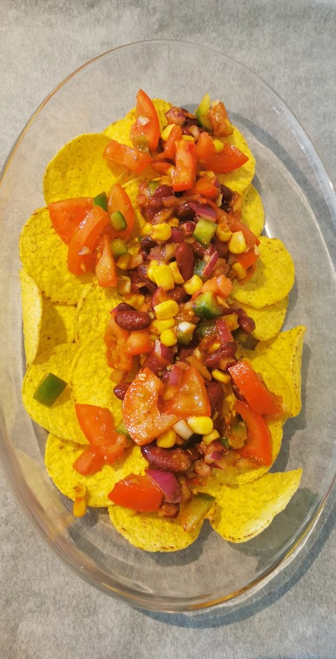

Nachos

Beskrivelse
Enkel og grei nachos i form, der du bruker det du har i kjøleskapet. Bruk gjerne hjemmelaget salsa og rømmetil denne.
Ingredienser
- 0,5 rødløk, hakket smått (men ikke fint)
- 0,5 chili, finhakket
- 1 fedd hvitløk, finhakket
- 0,5 grønn paprika, grovhakket
- 4 ts peppes pizzasaus/tomatpuré
- 2 til 3 tomater, grovhakket
- 1 boks kidneybønner
- 1 boks mais
- 2 ts fajitas bbq-krydder
- 0,5 ts tørket oregano
- (0,5 ts røkt paprikapulver dersom du bruker vanlig tacokrydder uten bbq-smal og tomatpuré)
- nachoschips
- 1 moden avocado
- 1 til 2 ss rømme
Fremgangsmåte
- Sett ovnen på 200 grader celcius
- Hakk opp alle grønnsakene, skyll av laken fra kidneybønner og mais.
- Ha alt i en bolle og rør inn krydder og pizzasaus/tomatpuréen.
- Fordel nachoschips i en ildfast form og hell over tacoblandingen.
- Stek i ovnen i ca. 15 minutter.
- mens nachos er i ovnen, mos avokado sammen med rømmen.
- Kos deg! :)
Tilbake til forsiden